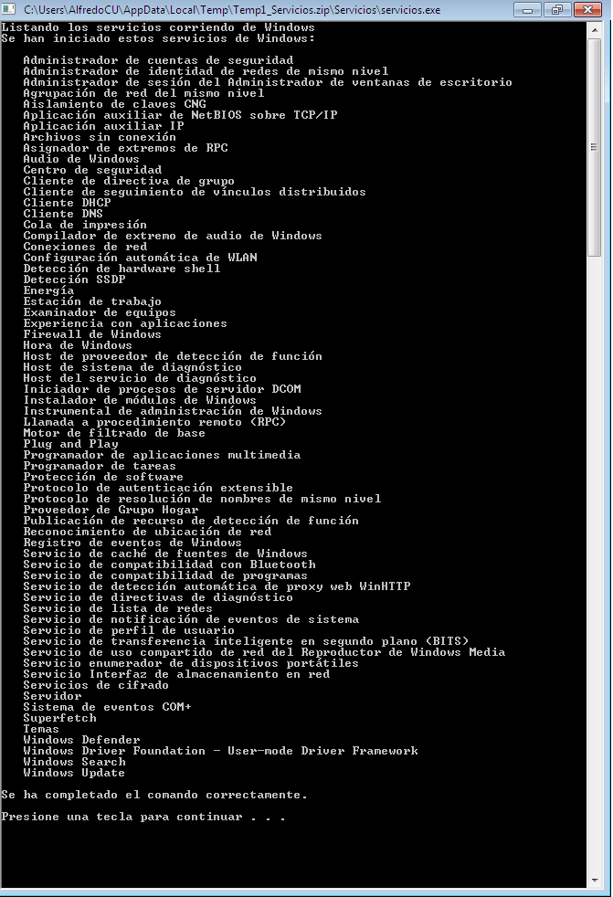
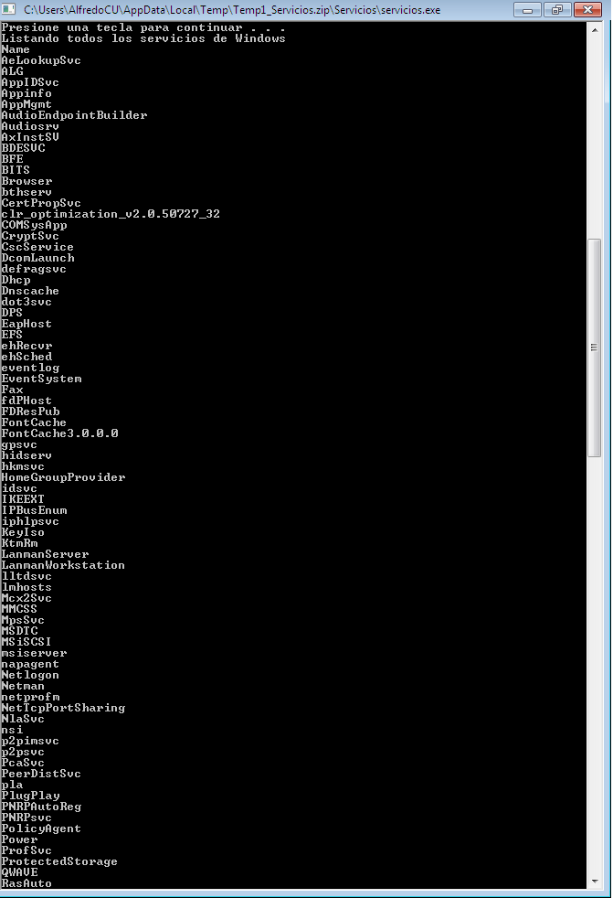
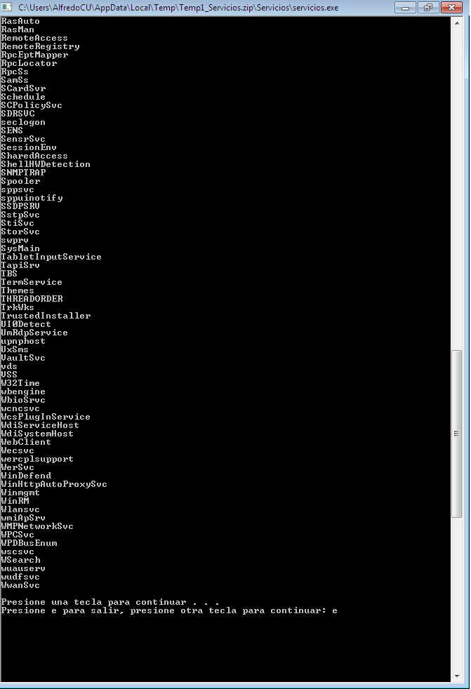
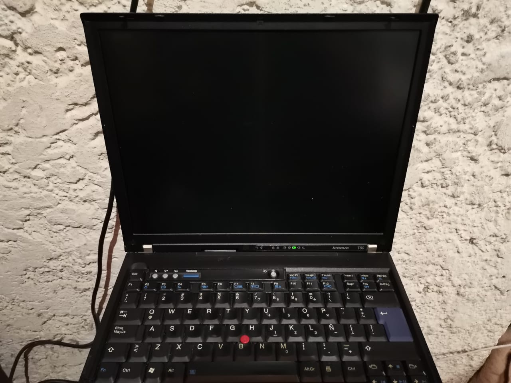

Servicios de Windows y Linux
Hacer un programa que muestre los servicios de Windows y de Linux.
Código del programa
El programa se realizo en el lenguaje de C++, se creo para ser portable para Windows y Linux, este programa realiza la ejecución de funciones que al ejecutarse, muestra los servicios del sistema en consola.
Se agrega la librería de cstdlib la cual nos ofrece un método llamado system el cual nos ofrece varias opciones como iniciar, pausar y mostrar el nombre de los servicios.
Se agregaron validaciones para identificar que tipo de sistema es, si es Windows o Linux, aparte de las funciones que inician, listan los servicios y pausan las ejecuciones del sistema.
#include "iostream"
#include "cstdlib"
#ifdef _WIN32
#define TO_SHOW 0
#else
#define TO_SHOW 1
#endif
using namespace std;
void showWindowsServices() {
cout<<"Listando los servicios corriendo de Windows\n";
system("net start");
system("pause");
cout<<"Listando todos los servicios de Windows\n";
system("wmic service get name");
}
void showLinuxServices() {
cout<<"Listando los servicios de Linux\n";
system("ps aux");
system("pause");
}
void servicesToShow(int system) {
if(system)
showLinuxServices();
else
showWindowsServices();
}
bool continueExecution = true;
int main() {
char selection;
do {
servicesToShow(TO_SHOW);
system("pause");
cout<<"Presione e para salir, presione otra tecla para continuar: ";
cin>>selection;
if (selection == 'e' || selection == 'E')
continueExecution = false;
} while (continueExecution);
return 0;
}
Y por último nuestra función principal donde se llaman todas nuestras funciones y validaciones hechas.
Prueba en Windows
Inicio del programa (Servicios corriendo).

Continuación (Servicios corriendo).

Se muestran todos los servicios.

Prueba en Linux
Para que nosotros podemos ejecutar nuestro programa en Linux, primero necesitamos utilizar los siguientes comandos.
sudo apt-get updateEste comando permitirá actualizar las bibliotecas en los repositorios del S.O.sudo apt-get upgradeActualizar los programas a su última versión.sudo apt-get install build-essentialInstalará el compilador GCC y otras herramientas de desarrollo.- Nos posicionamos en nuestra terminal en el directorio donde se encuentra nuestro programa y después escribimos
./Serviciosy ejecutara el programa.
